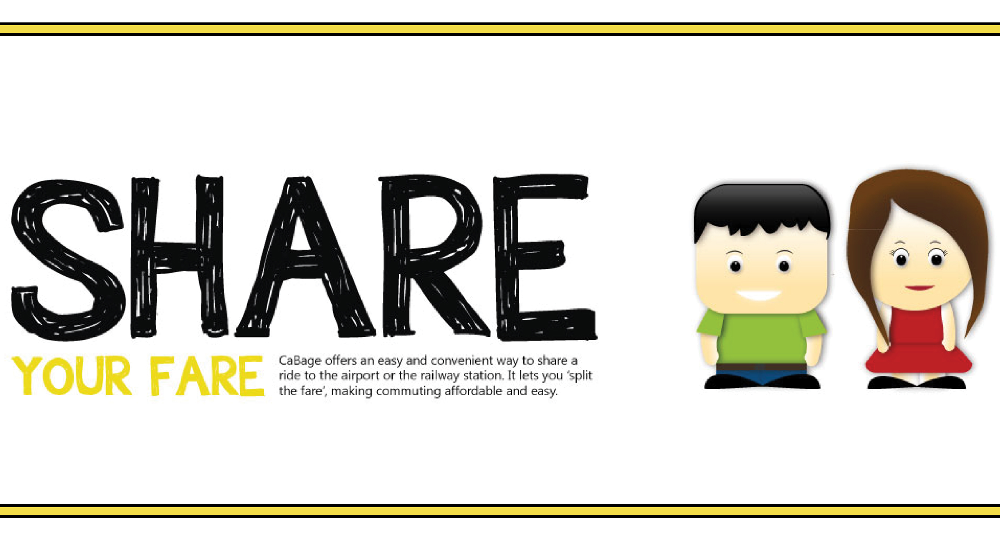

The project was taken up to solve the problems faced by the fraternity of students and other members in the campus of Indian Institute of Technology, Guwahati, while travelling to and fro from the campus to airport/railway station.
We travel every day to our workplaces, markets, airports etc. The same route is traversed by hundreds at the same time. Similarly, during vacations, in general, in all the colleges, students travel from the campus to airport/railway station. Most of them book cabs. There are many people who travel the same destination starting from the same place yet, since we are unknown to that fact we lose a chance to share the cab and save some money. We surveyed in the campus, and we found this increases during festive holidays where only a handful of us travel to airports or railway stations. So we planned to come up with a solution that could help college student (and others) to effectively form pools to share cab which could save money and fuel as well as bring home the idea of green travelling.
The first step of the design process involved formulating the design brief and getting a detailed idea about the concept. Once the idea was finalized upon, the next step was doing a market study to get a brief overview about existing products. A literature study followed to understand and analyze works done in the area, accompanied by a qualitative user research in order to understand user goals and requirements.
We did Literature Study and found out that Major factors affecting car-pooling were- Demographics, Space, Motivation, Household mobility, Work schedule, Programming, Role preference, Commute pattern and Commute distance.
We moved on to the next stage, wherein user needs and the skeleton of the product needed to be defined. We then defined the user persona and then moved on to elaborate the needs and requirements of the user. Once we had a clear definition of the user, we started forming the blueprint of our web app. Scenarios were formed followed by the information architecture.
Having developed the skeleton for the web app, we proceeded to the next step of our methodology. Once the information flow was finalized, the graphics of the app were improvised and worked upon.